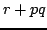

Usage
fft!(P)(r,p,q)
Signature
fft!: (P: UnivariatePolynomialCategory0 %) (P, P, P)
| Parameter | Type | Description |
|---|---|---|
| P | UnivariatePolynomialCategory0 % | A polynomial type |
| r,p,q | P | Polynomials |
Returns
Replacesby  where the product is computed using FFT. The space occupied by the first argument
See Also
fft